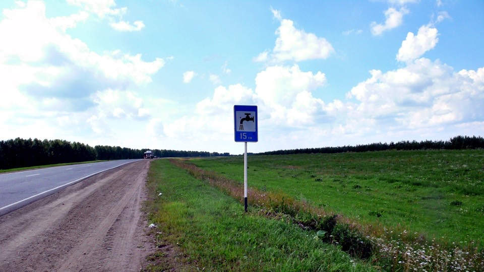
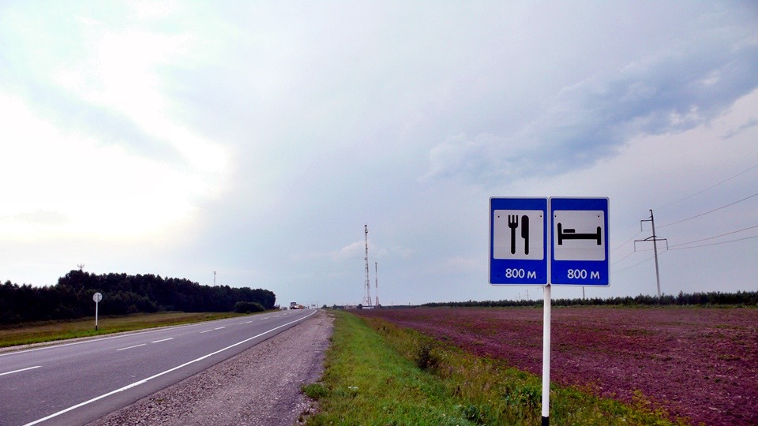
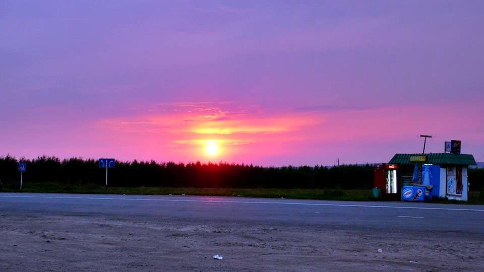

很久沒有睡得如此香甜，安安穩穩地睡到自然醒，八點多的時候拿水壺到樓下泡了熱咖啡，配著昨天買的圈圈餅乾當早餐。
此時外頭起了濃濃的大霧，真是詭譎多變的天氣，下雨、晴天、起霧通通都有。
霧氣在地面飄動，豎立在地上的電塔只有頂端看得見，底下則是一片白茫茫。
整個上午都在房間整理昨天寫了三分之一的中文遊記以及最新翻譯完的英文遊記，直到中午才離開旅館。
要走的時候又泡了一壺熱咖啡路上慢慢喝，配著昨天買的蛋糕就是午餐了。
這種蛋糕很不錯，方便攜帶、很好吃、價錢也便宜，只要有商店出現我都會找有沒有同類型的蛋糕。
在公車站休息吃午餐，既然都停下來了，那就順便把身上的厚衣服給換下來，改穿薄的排汗衣，天氣已經不再像前陣子那樣雨霧綿綿。
一換上輕薄的衣服瞬間就涼快很多，一個簡單的動作就可以讓今天少流很多汗。
將近中午的時候要過橋，底下是一條蠻寬的河，橋的入口兩側都有小房子的檢查站。
依照以往的經驗，檢查站的人不會攔我，所以就直接給他騎過去，剛騎上橋馬上就被檢查站的人很大聲地吆喝叫回來。
好像不小心觸犯了什麼禁忌，掉頭回去之前先將墨鏡和口罩給拿下來，這樣看起來比較沒那麼可疑。
檢查站的人跟我要過橋的通行證，不過是一座橋而已，還需要通行證才能走？再說我也不可能有這樣的證件。
攤了攤手說沒有這種東西，心裡想說他該不會不讓我過橋，叫我繞道而行吧？
他拿出無線電講了幾句話，隔壁房子裡就出來一個看起來位階比較高的人，招手叫我牽車過去。
警官問我從哪裡來的？我出示護照，表明身分，他只看了封面知道我是台灣人之後就把護照還給我，連翻都沒翻開。
指著小多掛載的包包，要我打開來給他檢查，是不是這麼嚴格？又不是出入境，過個橋而已也要檢查行李。
心裡雖然嘀咕著，但還是乖乖地照做，才打開第一個包包的拉鍊，露出一包洗衣粉，他就揮揮手說可以了，不用再看了。
如果真的要檢查行李，那整個也太不專業了一點吧，警官跟剛才那個把我攔下來的人說可以放行，讓我過橋。
本來想拍他的照片，但是被阻止，而且很清楚地跟我說不只不能拍他，這座橋還有橋下的河都不能拍攝。
牽著小多走旁邊的人行道過河，底下看起來也不像是什麼軍事設施，就是幾艘破舊的工業船隻在航行而已，但景色真的很漂亮。
停下車想偷拍這漂亮的照片，一回頭就看到那些警官遠遠地在盯著我的一舉一動，好不容易可以過橋，還是別給自己找麻煩的好。
等到終於走完了這座橋，我又問了對面的檢查站人員這邊可不可以拍照？答案還是一樣不行，但是走遠一點的話回頭拍他們就管不著了。
路旁看到比較大間的加油站會有LED燈交替顯示著時間、溫度和日期，時間部分有點奇怪。我的手錶顯示中午十二點，但是加油站的時鐘才早上十點。
從哈薩克進入俄羅斯的時候我還特地對了當地店家的時鐘，確定時區和哈薩克一樣都是+6，所以沒有調手錶的必要。
往西邊騎了幾天的車，時區悄悄地變成+4的時區，跟中國佔地廣闊一樣，時區很多變，中國統一使用的是北京時間，在俄羅斯則是莫斯科時間。
這樣就能解釋晚上十一點太陽才下山的異狀，依莫斯科時間來計算的話，太陽下山的時間是晚上九點，正常得很。
暫時還不想調手錶，一來麻煩，二來就不能享受額外的日光時間了。
除了簡單的飲料之外，現在要大量採購商品都會等到有專營的商店出現才購買，價錢便宜很多。
在這間商店進行了大採購，一共買了四個冰淇淋、四包泡麵、兩公升裝的綜合果汁、一大條麵包和一袋夾心餅乾。
果汁裝在水壺裡，剩下不到半盒就一口氣喝掉，配上牛奶冰淇淋就是下午茶了，餅乾和泡麵塞進包包裡之後發現還有些微的空間。
繼續進店裡再採購，好吃又便宜的蛋糕兩條，即溶咖啡五包，要是有熱水的話就可以泡咖啡和煮泡麵來吃。
開始有點想開伙了，本來打算進入歐洲之後才自己煮東西吃，留點東西給後面的日子發揮。
採購完畢出發時看到一個牌子，寫著十五公里之外有水龍頭，這有什麼特殊的含意嗎？
這段十五公里的路還蠻好走的，路平坦、景色寬闊、心情也開朗起來。

十五公里之後出現龐大的休息區集團，這就是所謂的水龍頭標示嗎？
依照經驗判斷，會出現這麼大規模的休息區，都是表示再往前走是一長段的荒野、人煙罕至，這邊大概就是漫漫長路的中段部分，提供路過的人吃喝。
賣的東西相當多，主要是煙燻的魚乾，各式各樣的魚都有，不知道味道怎麼樣？
買一條魚拿起來啃有點太猛，沿著店家走尋找適合填肚子的食物。
這間店不賣魚乾，賣很多手工製作的蛋糕、麵包、披薩，甜的鹹的都有，經過的時候店裡的媽媽就用俄文介紹了桌上的食物。
看到這些琳瑯滿目的食物真是讓我口水直流，先吃了一個二十元的披薩，裡頭放了很多切碎的火腿和起司和一片番茄，很好吃。
用餐還免費附贈甜甜有蜂蜜香味的熱紅茶，跟著在旁邊休息的警察一起吃點心，知道俄羅斯的警察不如我想像中的可怕後，就沒必要閃著他們了。
和警察聊天也蠻有趣的，他們多少都會講一點英文，然後會將問到的答案，比如我旅行三個月了，用俄文再跟圍觀的人宣佈。
本來只想吃個點心，結果吃了披薩之後胃口大開，到麵包媽媽那邊又挑了一個麵包吃。
這種麵包外觀看起來都一模一樣，還沒咬下去之前不知道裡頭包的是什麼料，這次吃到的是拌著蔥花的炒蛋。
這些糕點都是這個媽媽自己做的，很厲害，看我吃得讚不絕口，媽媽又拿了另一個麵包給我吃，比較高級一點，包的是胡椒洋蔥肉餡。
吃著可口的麵包，打開腰包準備要付錢，媽媽揮手說不用，這個請我吃，吃完之後這一袋的麵包都送給我，帶著路上繼續吃。
真是好心而且手藝很好的媽媽，美食當前那就不客氣地收下了。
騎車的時候抬頭看著天空，除了朵朵白雲之外常常都會看見俄羅斯的軍機在演練。
機尾拖著白色的煙，以不可思議的角度快速爬升、俯衝，就像一場免費的空中表演秀一樣。
隔著這麼遠拍戰機，不會還觸犯國家機密法吧？
果真從離開媽媽麵包店開始，前方都是田地、平原，沒有建築物，連小農村都很少見到。
金黃色的小麥田隨風搖曳，可惜是逆風，吹得我腳軟無力，在這邊偷偷地摘了一些麥穗當紀念品。
晚上八點的時候再次遇到可以吃住的地方，看著旅館的招牌，今天不想住旅館，找地方吃晚餐就心滿意足了。

往這一區最豪華的餐廳兼旅館走去，裡面有獨立的廁所給用餐的客人使用，水龍頭的熱水也是基本配備。
使用之前，到餐廳去買了一瓶可樂，消費過後再拿著毛巾去廁所擦了熱水澡，免費的高級享受。
本來想洗完澡之後順便在餐廳裡面吃飯和整理遊記，可是餐廳太高級了，小多不讓我牽進去放，從裡面也看不到外頭的情形，只好另尋他處。
今天就打算騎到這裡為止，要找地方吃飯很容易，就算不吃飯也沒關係，包包裡的食物多的是。
但是充電就不是那麼好解決了，畢竟我沒有隨身攜帶發電機，大餐廳的隔壁是小小間的餐廳，主營DVD電影的租售。
規模很小，坐在裡面吃飯就能看到外面的小多，桌上擺著前個客人吃完還沒有收的餐盤，我指著雞骨頭說也給我來一支這個。
店員拿出一支大雞腿，秤過重後要價一百一十盧布，我從腰包裡拿出來攤在桌上的錢只有四十盧布。
店員看著我的預算，換了一支小小的、乾扁的雞腿，秤過重之後只要二十七元，落差很大。
配上塑膠杯裝的熱咖啡八元，還剩五元就買麵包，四十元正好花光在這裡。
今天的晚餐不怎麼豪華，看起來還有點寒酸。
反正能填飽肚子就好，而且我坐在這裡的主要目的是充電寫遊記，吃飯只是其次。
吃完飯不到五分鐘，店員就說他要關門了，請我離開，我連遊記都還沒開始寫呢，真是傷腦筋。
但真是多虧他關門關得早，此時已經晚上十點半，我還沒找到今天要過夜的處所，太陽都快要下山了，心裡卻想著寫遊記，事情輕重緩急分不清楚。

離開小餐廳，外頭看到有公車站，但是太靠近休息區，來往的人車很多，而且公車站的外觀很不遮蔽，
在這住一晚肯定會被奇奇怪怪的人騷擾，再說已經睡過公車站了，再睡一次就變成老梗，太無趣了點。
離開休息區之後又是田地、平原，那今天要睡在哪邊好呢？
離開大馬路轉進小路裡，真的除了田地之外沒有別的東西，既然這樣，那今天就睡在田裡好了。
在路旁有一個小土堆，插著道路的告示牌，底下是剛翻過的田地，將小多和包包分批拿下鬆軟的土丘。
這次真的要睡在地上了，沒有可以當作床的東西，睡墊能不能隔離地表的濕氣，過了今晚就能夠驗證。
鋪設好露營的帳篷，看起來很滿意，這邊離大馬路很遠，小路經過的車流量也不大，不會有刺眼的燈光和噪音。
雖然睡在毫無遮蔽物的天空底下，但是今天的天氣很不錯，夜間下雨的機會很低，可以放心地睡覺。

一切都就緒之後還爬回馬路上來回地檢查，看看這個露營地點從外面看會不會很醒目，比我想像得還要隱蔽。
連田裡都可以睡，那接下來還有什麼地方不能露營？
躺在帳篷裡等著天黑，今天是旅行的第一百天，應該紀念一下，蟋蟀的鳴叫聲當伴奏，輕輕得哼著一首歌，直到睡著。
繼續閱讀：7.31 順風車
俄羅斯-盧布－ 1：1.3 台幣
7.30
總計：344元
大杯熱咖啡10元、商店大採購冰淇淋四個、泡麵四包、兩公升綜合果汁、大麵包一條、夾心餅乾半公斤、蛋糕兩條、即溶咖啡五包220元、點心披薩、蔥蛋麵包35元、可樂39元、晚餐小雞腿、麵包、咖啡40元